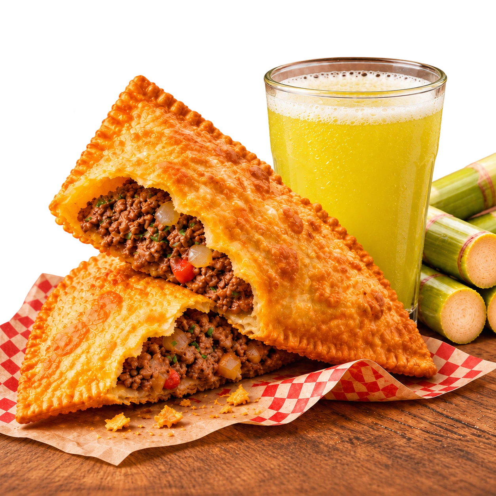

Pastel da FeiraPastelaria • Sabor de feira
Loja demonstrativaCROCANTE POR FORA.
FEIRA POR INTEIRO.
Pastel dourado e caldo de cana para combinar.

Avaliação de exemploBairro de exemploHorário de exemplo
Modelo demonstrativo • Imagem ilustrativa